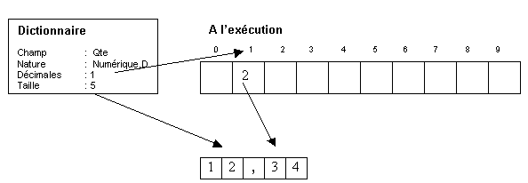

Il est possible de définir des champs numériques sans connaître le nombre de décimales de ces champs lors de la saisie du dictionnaire. Par exemple, dans certains pays la comptabilité se fait sur trois décimales, et en gestion, les quantités peuvent être sur 0 1 2 ou 3 décimales etc.
Lorsque le nombre de décimales n’est pas connu au moment de la saisie du dictionnaire, le champ est déclaré avec des décimales variables. Le nombre réel de décimales sera fourni au moment de l’exécution du programme.
Harmony peut gérer jusque 10 types de décimales variables.
Déclaration d'un champ à décimales variables
Le chiffre saisi dans le champ Décimales indique non pas un nombre de décimales, mais un indice dans une table (de 0 à 9) qui contiendra le nombre de décimal réel au moment de l’exécution.
Utilisation du champ
Les champs à décimales variables s'utilisent exactement de la même manière que les champs à décimales fixes.
Le nombre de décimales de la variable sera pris en fonction de son type dans un tableau défini dans l'enregistrement System.
Avant d'utiliser une donnée à décimales variables, cette table doit être initialisée par le programme. Il est toujours possible de changer en temps réel cette table en cours d'exécution.
Pour plus de détails, voir la rubrique "Décimales variables" du livre de la documentation Xwin - Programmation consacré au langage Diva.
Exemple
